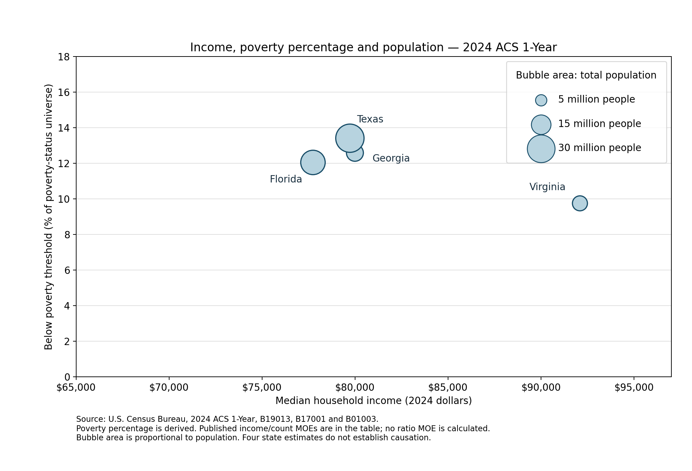

Also known as: bubble graph, bubble plot. Related: Scatter Plot, proportional-symbol maps.
Apply the Census Bureau Statistical Quality Standards, revised September 29, 2026, within their stated scope. The chart-selection advice and implementation checks on this page explain practical design choices; they do not create additional agency mandates. Treat Essential items as the core design conditions for this chart, and confirm formal applicability through the program’s review process.
Coordinate this page with Titles and Subtitles, Legends, Sources, and Visualizing Uncertainty. Keep detailed component guidance in those shared pages rather than duplicating it here.
A bubble chart extends a scatter plot by representing a third quantitative variable using circle area. Two numerical measures determine each bubble’s x- and y-position, while a nonnegative magnitude determines its size. Each mark should represent a clearly defined observation such as a state or occupation. A pattern in a bubble chart is not, by itself, evidence of causation or statistical significance.
| Communication goal | Preferred chart | Reason |
|---|---|---|
| Two quantitative measures | Scatter plot | Two-axis encoding is easier to read precisely |
| Three quantitative measures | Bubble chart | Adds area as a third encoding, with reduced precision |
| Compare many groups with heavy overlap | Faceted scatter plots or small multiples | Reduces occlusion and preserves comparisons |
| Exact values or ranked categories | Accessible table or bar chart | Area is not well suited to precise numerical judgments |
Use circles with equal width and height and a quantitative area key. If color or shape distinguishes categories, provide a category legend unless direct labels identify every category clearly. Keep selected point labels readable and plot smaller marks above larger ones where possible. The chart has three quantitative encodings: horizontal position, vertical position, and area. Category encodings should remain secondary and should not be confused with additional numerical axes.
Use these comparisons to connect each design choice with its effect on interpretation.
| Problematic approach | Why it matters | Preferred approach |
|---|---|---|
| Circle radius is proportional to population | Circle area grows with the square of the intended quantity | Make area proportional: radius = k × square root of the nonnegative size value |
| A size key shows only small/medium/large | Readers cannot recover the quantitative meaning | Label reference circles with values in the same units and scaling as the plotted bubbles |
| Large bubbles hide small bubbles and their labels | Some observations disappear visually | Use drawing order, restrained sizes, clear edges, and an exact-value table; switch to facets if needed |
Test the chart at its intended display size and with enlarged text. Follow the reading sequence from title to explanation, figure, table, and source. Check that labels and meaningful marks remain distinguishable without color and that any controls can be operated by keyboard with visible focus. Read the explanation and table with a screen reader to confirm that they convey the same measures, units, missing-data conditions, and important relationships as the chart.
Use automated and manual accessibility testing together. A downloadable CSV supplies values but does not replace the chart’s explanatory narrative; see USWDS visualization guidance. Record the page/version, tool or assistive technology, result, and corrective action. Apply the sponsor’s agreed accessibility baseline rather than treating a palette simulation as a conformance test.
The following examples are retained from the Census guidance. Their datasets, periods, universes and design lessons remain distinct. Some illustrate limitations or less-preferred choices; inclusion does not certify every design or its accessibility.
Example 1. Share of White Young Adults From Low-Income Families Living in Their Childhood Commuting Zone by CZ Mean Income
The chart follows standard practices well. It includes a size legend, clear units of analysis, and a proper source statement. It effectively displays a multi-variable relationship using transparent and highlighted data points to support the story. Additionally, its observation labels are placed cleanly without overlapping other bubbles. However, the chart has one layout issue. An excessive number of bubbles overlap within the display. While this is a minor violation of a design recommendation, the chart still successfully fulfills its overall requirements.
Example 2. Median Earnings of Workers by Percentage With a Bachelors Degree or More in Each Occupation: Aged 25 to 65
The chart follows standard practices well. A note explains the circle representations. Small bubbles sit on larger ones cleanly. Axis labels clearly define analysis units. The chart successfully shows a three-variable relationship. Labels identify specific observations effectively. However, a few areas need improvement. Certain layout elements—specifically a label and the size explanation note—are poorly positioned, causing visual overlap and vulnerability to being cropped.

Source: Visualization: Teachers Are Among Most Educated, Yet Their Pay Lags. https://www.census.gov/library/visualizations/interactive/teachers-pay.html
2024 ACS income, poverty and population by state. B19013, B17001 and B01003: income is x, derived poverty percentage is y, and total population controls circle area.
What this adds: Adds quantitative area-scaling checks and a reusable exact-value dataset.
Run evidence: The supplied November 10, 2026 run generated this example. Saved-data arithmetic and chart layout were reviewed for this package; published-page accessibility testing remains outstanding.

Source and interpretation: U.S. Census Bureau, 2024 ACS 1-Year Estimates, Detailed Tables B19013 (income), B17001 (poverty counts and universe) and B01003 (total population). Poverty percentage = 100 × below-poverty count / poverty-status universe. The supplied run completed November 10, 2026 (UTC).
Bubble area, rather than radius, is proportional to population. Published income and poverty-count MOEs remain in the data table; no MOE was calculated for the derived poverty percentage. The companion scatter plot uses identical x/y values and equal marker areas. Four state observations do not establish causation.
Selected values (rounded for display; CSV retains exported precision):
| State | Income estimate ($) | Below poverty (%) | Population estimate |
|---|---|---|---|
| Florida | 77,735 | 12.05 | 23,372,215 |
| Georgia | 79,991 | 12.59 | 11,180,878 |
| Texas | 79,721 | 13.41 | 31,290,831 |
| Virginia | 92,090 | 9.75 | 8,811,195 |
Read the data tables · Download bubble_chart_data.csv
Implementation: Python source. The integrated layout is reproduced from the saved CSV by the reviewed-layout script. The original illustrations above and the ACS output have separate asset paths and source statements.
Use the original illustrations to discuss design choices and their source-specific limitations. Use the ACS addition to demonstrate a documented data-to-chart workflow. Do not combine values across examples, imply that they use one dataset, or relabel a historical image as a new ACS output.
The following contract defines the intended behavior of the linked examples. Confirm the files, commands, dependencies, and generated results against the repository before publication.
Inputs: Matched 2024 ACS 1-Year state records for B19013 (income), B17001 (poverty universe/count), and B01003 (total population), with applicable published MOEs and annotations.
Validate a one-to-one state join across all three tables. Derive poverty percentage from B17001_002E/B17001_001E, and use B01003_001E only for bubble area. Require finite valid coordinates and nonnegative size values. Explicitly handle zero-size observations so their absence is not mistaken for missing data.
Use the supplied
Python implementation and the ACS example
runner. The runner maps this page to job bubble_chart.
Its dependencies are listed in requirements.txt.
Confirm supported input options in the implementation and its
accompanying README.
The executed notebook contains saved outputs from the supplied ACS run. The run status CSV records generated results. The notebook produces the ACS additions; it does not recreate the historical Census illustrations.
The analytical definitions and output checks on this page also specify the requirements for an R counterpart. A verified R implementation is not bundled in this combined package. Retain R execution and Python/R agreement as outstanding validation tasks; do not describe them as completed.
A personal Census API key is required for data queries under the current
Census API guidance. Read CENSUS_API_KEY from the
analyst’s environment. Do not include keys in source control, saved
notebooks, request logs, error messages, or execution manifests; redact
the key query parameter wherever a request URL is recorded.
No shared developer credential or private file path should be
required.
For each run, save the validated data, chart PNG/SVG, a semantic HTML table, descriptive-text draft, and a nonsecret manifest in the selected output folder. Include source table/variables, full reference period, geography, units, transformations, exclusions, dependency versions, and retrieval time. Pin or record versions actually tested. For identical inputs, R and Python should reproduce the same analytical values within an explicitly documented tolerance; visual styling need not be pixel-identical.
When changing years or geographies, recheck product coverage, definitions, annotations, and comparability. A successful run does not establish statistical significance or accessibility conformance.
| Check | Expected evidence |
|---|---|
| Area scaling | For positive sizes, area ratios equal quantity ratios. A fourfold quantity has fourfold area and twice the radius; the size key uses the same mapping |
| Cross-chart agreement | For the same state selection, bubble x–y coordinates match the related scatter plot; only the third-variable area encoding differs |
| Coverage and access | Included and excluded state counts reconcile; overlapping observations remain recoverable in the table, and no size or color is the sole source of an exact value |
Source-statement pattern for this example: U.S. Census Bureau, American Community Survey, 2024 ACS 1-Year Estimates, Detailed Tables B19013, B17001, and B01003, selected states. Poverty percentage is derived; bubble area represents total population. Add the specific source or reproducible request link and actual retrieval date; omit the API key. Identify derived calculations separately from published estimates.
| Error | Correction |
|---|---|
| Scaling bubble radius linearly with population | Scale area linearly with population |
| Treating state-level association as causation | Describe association only; avoid ecological inference |
| Reporting numerator MOE as poverty-rate MOE | Preserve the published MOE and calculate the rate’s uncertainty using an appropriate method if needed |
| Interpreting total population as poverty-universe count | Label these denominators separately |
| Depending exclusively on hover or color | Include labels and an accessible underlying data table |
| Enlarging bubbles until smaller ones disappear | Reduce size, use transparency, adjust ordering, or choose small multiples |
The original Census page and its example assets are preserved in this package; see the review record for the exact baseline and changes.
Use the September 29, 2026 consolidated Census Statistical Quality Standards, especially E1-6 (replication documentation), E2-2.3 (visualization requirements), and E3-2.4 (visualization review). Retain review findings and corrections separately from the design checklist.